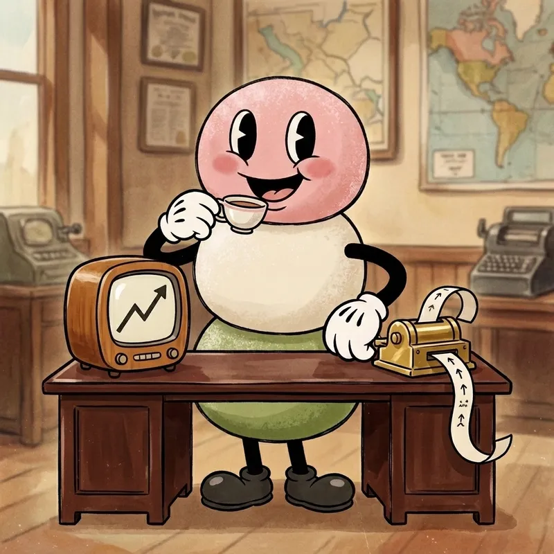
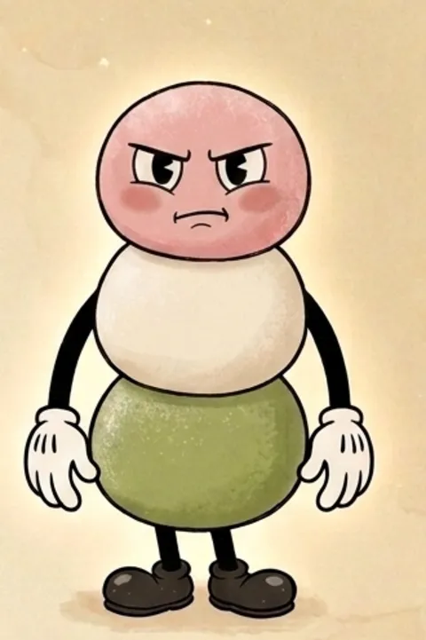

— MOH-CHEE-ON —
A systematic crypto trading system,
built and documented in the open.
One person, four Python services, two exchanges — and a little mochi who narrates the whole thing. This is the build log of a real trading machine, drawn like it's 1934.
The pipeline is running.

What Mochion is
A personal, systematic crypto trading operation: a pipeline of Python services that run and monitor strategies on perpetual futures across Bybit and Hyperliquid, with institutional-style risk management and a paper trail for everything.
The mascot is soft. The process is not.

When it breaks, you'll read about it
Most trading pages show you the wins. This one documents the failures on purpose: flaky tests, drift between docs and code, strategies that stop working and get retired by the numbers. The honest version is the interesting version.
Fresh failures ship to the build log.

Risk is the product
Volatility-targeted sizing, statistical kill-switches, regime attribution, and reconciliation between what the system thinks and what the exchange says. The machine is built to survive weather, not to predict sunshine.


The story continues
Mochion ships in public: build notes, telemetry, and the occasional milestone. Where it's headed next lives on the roadmap.
Follow the build — the little machine posts its own progress.
Follow @mochionhq